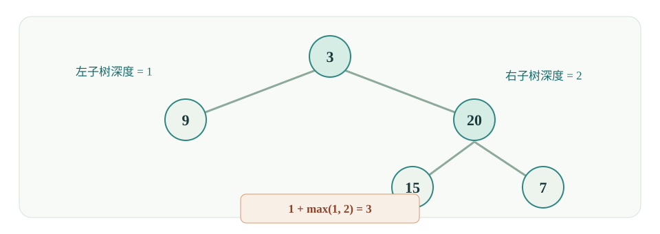
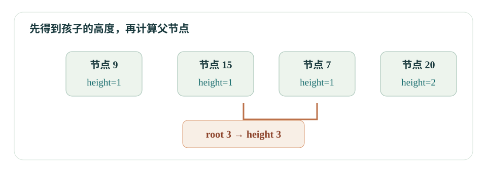
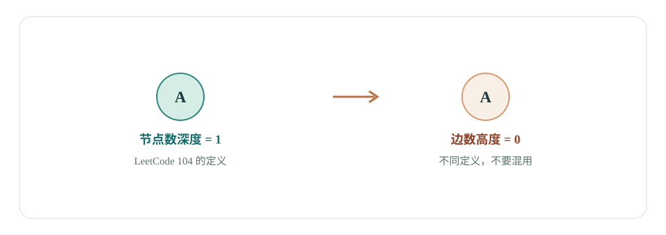

LeetCode 104 · 二叉树的最大深度
递归函数只回答一个问题：这棵子树有多高？
简单 Easy12 分钟Tree DFS01 · 先说清楚“深度”怎么算
给定二叉树根节点 root，返回从根节点到最远叶节点的最长路径所包含的节点数。空树的深度是 0；只有一个根节点的树深度是 1。

知道左子树的最大深度和右子树的最大深度，就能得到当前树的最大深度。我们不需要重新遍历子树，只需要让递归函数把结果返回。
02 · 定义递归函数的返回值
定义 depth(node) 为以 node 为根的子树的最大深度，按节点数计：
- 如果 node 是空节点，返回 0。
- 否则，返回 1 + max(depth(node.left), depth(node.right))。
基例：空树返回 0。子问题：分别求左右子树深度。组合：取较大值并加上当前节点这一层。每次递归都进入更小的子树，最终抵达空节点。
这个计算依赖孩子的结果，所以逻辑上是后序：先处理左右子树，再汇总当前节点。
03 · 高度如何从叶子向上传播？
对 [3,9,20,null,null,15,7]，叶节点 9、15、7 的高度都是 1；节点 20 的高度是 2；根节点 3 的高度是 3。

先走到左叶节点 9。它的左右孩子都是空树，空树高度定义为 0，因此节点 9 返回 1。
depth(9)=1
04 · 正确性证明：对树的结构归纳
空树没有节点，深度为 0，基例正确。假设左右子树的递归结果分别准确等于它们的最大深度。任何从当前根出发到叶节点的路径，都必须先经过根，再进入左子树或右子树；最长路径因此是 1 加上左右子树深度的较大值。递归公式返回的正是这个值。
由于每个非空节点只计算一次，时间复杂度为 O(n)。递归调用栈的最大深度等于树高 h，因此额外栈空间为 O(h)：平衡树约 O(log n)，极端单链树为 O(n)。
05 · Python 实现与递归深度
递归定义最适合表达数学关系。不过 LeetCode 的节点数上限为 10⁴，极端退化树可能超过 Python 默认递归深度。下面的提交实现使用显式栈模拟 DFS，保留同样的深度状态，同时避免解释器递归限制。
class Solution:
def maxDepth(self, root) -> int:
if root is None:
return 0
stack = [(root, 1)]
best = 0
while stack:
node, depth = stack.pop()
best = max(best, depth)
if node.left is not None:
stack.append((node.left, depth + 1))
if node.right is not None:
stack.append((node.right, depth + 1))
return best
递归写法的数学定义仍然是 0（空树）或 1 + max(left,right)。显式栈把“递归返回的深度”改为每个待访问节点携带的路径深度。
| 维度 | 结论 | 说明 |
|---|---|---|
| 时间 | O(n) | 每个节点入栈、出栈一次。 |
| 额外空间 | O(h) | DFS 显式栈保存待处理节点，h 为树高。 |
| 递归版本栈 | O(h) | 递归表达更简洁，但极深树需留意 Python 递归限制。 |
06 · 易错点：节点数与边数差 1
本题的最大深度按节点数计算。单节点树的答案是 1；如果按边数计算，才会得到 0。后面学习二叉树直径时，直径又按边数计算，必须把两个定义分开。

这个递归模式还会迁移到节点计数、平衡性判断、子树信息汇总，以及二叉树直径等问题。